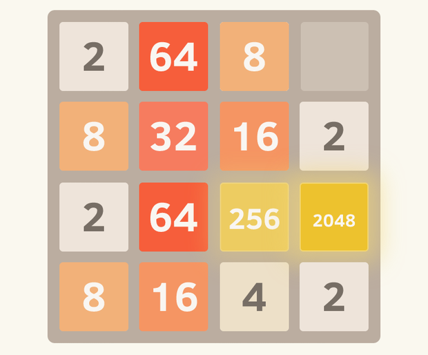

Pensando nisso, que tal um jogo, igual aos de antigamente que nos faziam estudar durante dias e dias
como derrotar tal chefe, como passar de tal fase, como subir aquela torre que infelizmente a princesa não estava lá.
Jogos que, ajude crinças do ensino fundamental e médio a se esforçarem ao máximo para ir atrás do objetivo final, além de concluir o objetivo proposto, aprender o máximo de acordo com a matéria ensinada no determinado jogo.
Mas como isso seria possível?
Eu sei, eu sei, como uma pessoa jogaria um jogo e ainda estudaria com ele? Isso é muito chato ninguém gosta de jogos educativos, isso é impossível. Olhando assim nós esquecemos dos jogos que fizeram as pessoa literalmente ficarem viciadas jogando, um exemplo simples é o jogo 2048, quem nunca se viciou naquele jogo simplesmente não o jogou, e além de tudo, ele ensinava a matemática básica e é um jogo simples e ensinava que 2+2 = 4 e 4+4 = 8.
